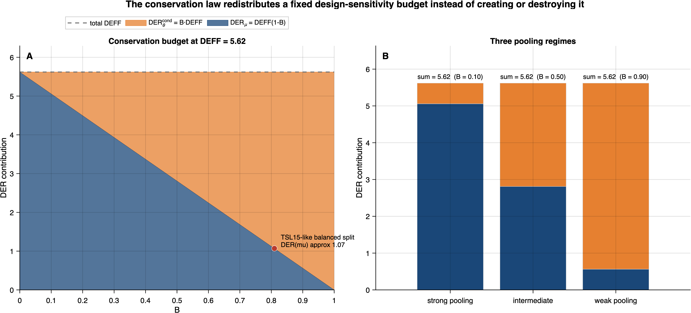
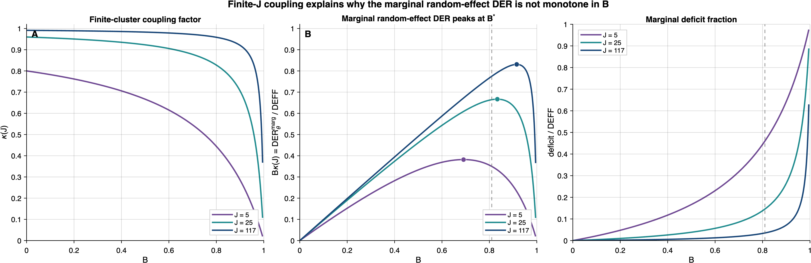
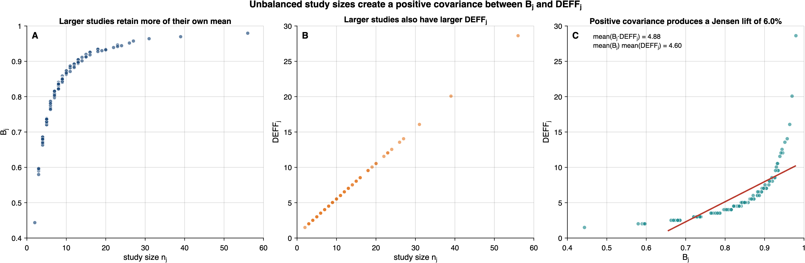

8 Conservation Law
Part (c) of Theorem 3 is the most striking result of the DER transfer: the design sensitivity budget is conserved. This chapter provides the full algebraic proof, develops the economic interpretation, derives the marginal deficit formula (new for V2), analyzes the non-monotonicity of the marginal DER, and reconciles the empirical conservation gap observed in V1.
8.1 Theorem 3(c): The Conservation Law
Theorem 3(c) (Conservation Law). In the intercept-only balanced model (\(n_j = n\), \(\bar{s}_j^2 = \bar{s}^2\) for all \(j\)): \[ \mathrm{DER}_\mu + \mathrm{DER}_\theta^{\mathrm{cond}} = \mathrm{DEFF}. \tag{8.1}\]
8.1.1 Full Algebraic Proof
Under the balanced intercept-only model, all study-specific quantities collapse to common values: \(B_j = B\), \(\mathrm{DEFF}_j = \mathrm{DEFF}\), \(\bar{s}_j^2 = \bar{s}^2\). From Theorem 3(a) and 3(b): \[\begin{align} \mathrm{DER}_\mu &= \mathrm{DEFF} \cdot (1 - B), \\ \mathrm{DER}_\theta^{\mathrm{cond}} &= B \cdot \mathrm{DEFF}. \end{align}\]
Adding: \[ \mathrm{DER}_\mu + \mathrm{DER}_\theta^{\mathrm{cond}} = \mathrm{DEFF}(1 - B) + B \cdot \mathrm{DEFF} = \mathrm{DEFF}\bigl[(1 - B) + B\bigr] = \mathrm{DEFF} \cdot 1 = \mathrm{DEFF}. \]
The conservation law is a trivial algebraic identity once the DER decomposition formulas are established. Its mathematical content lies not in the proof but in the decomposition theorems (Theorem 3(a)–(b)) that produce the complementary factors \((1-B)\) and \(B\). \(\quad\blacksquare\)
Before developing the interpretation, it is worth noting what the conservation law does not require. It holds regardless of the prior on \(\sigma^2_\theta\), the number of covariates, or the magnitude of the within-study sampling variances. The only inputs are the shrinkage factor \(B\) and the design effect \(\mathrm{DEFF}\) — both scalar quantities computable from posterior output and study-level design features. This parsimony is what makes the conservation law a practical diagnostic, not merely a theoretical curiosity.
8.1.2 Economic Interpretation
Figure 8.1 provides a geometric view of the conservation law: for a given DEFF, the design-sensitivity budget is a fixed total that the shrinkage factor \(B\) redistributes between \(\mu\) and \(\theta_j\) along a linear trade-off.

The conservation law reveals that within-study dependence creates a fixed “budget” of design sensitivity — equal to \(\mathrm{DEFF}\) — that is redistributed between the overall effect and the study-specific effects by hierarchical borrowing, but never created or destroyed. The total cost of ignoring within-study correlation is conserved; only its allocation across parameters changes.
The redistribution is governed by the shrinkage factor \(B\):
Large \(B\) / weak pooling (\(B \to 1\); large \(\sigma^2_\theta\)). The posterior retains most weight on the study-specific estimates rather than pulling them strongly toward the overall mean. Most of the design-effect budget migrates to the study-specific effects: \(\mathrm{DER}_\theta^{\mathrm{cond}} \to \mathrm{DEFF}\), while \(\mathrm{DER}_\mu \to 0\). The overall effect is well calibrated, but the study-level posteriors are severely under-dispersed. This is the typical meta-analytic regime: with \(B \approx 0.8\) and \(\mathrm{DEFF} \approx 3\), the conditional random-effect DER reaches \(B \cdot \mathrm{DEFF} \approx 2.4\) — well into the moderate-to-severe misspecification tiers of Table 7.2. The forest plot intervals produced by standard Bayesian meta-analysis are systematically too narrow.
Strong shrinkage / strong pooling (\(B \to 0\); small \(\sigma^2_\theta\)). The hierarchical model treats studies as near-identical. Design sensitivity migrates to the overall mean: \(\mathrm{DER}_\mu \to \mathrm{DEFF}\), while \(\mathrm{DER}_\theta^{\mathrm{cond}} \to 0\). The study-level posteriors are well calibrated, but the overall effect carries the full burden of the design effect. The credible interval for \(\mu\) may be substantially too narrow.
Intermediate shrinkage (\(B \approx 0.5\)). The budget is shared approximately equally: \(\mathrm{DER}_\mu \approx \mathrm{DER}_\theta^{\mathrm{cond}} \approx \mathrm{DEFF}/2\). Neither parameter type is well calibrated, but neither suffers the full design effect.
8.2 Marginal Deficit Formula
The conservation law holds for the conditional DER. The marginal DER \(\mathrm{DER}_\theta^{\mathrm{marg}} = B \cdot \mathrm{DEFF} \cdot \kappa(J)\) is strictly smaller because \(\kappa(J) < 1\) for finite \(J\). This creates a “deficit” — the marginal DERs do not sum to DEFF.
Marginal Deficit Formula. In the balanced intercept-only model: \[ \mathrm{DEFF} - \bigl(\mathrm{DER}_\mu + \mathrm{DER}_\theta^{\mathrm{marg}}\bigr) = \frac{\mathrm{DEFF} \cdot B}{J(1-B) + B}. \tag{8.2}\]
This deficit is exact in the balanced case.
8.2.1 Proof
Substituting the formulas: \[\begin{align} \mathrm{DER}_\mu + \mathrm{DER}_\theta^{\mathrm{marg}} &= \mathrm{DEFF}(1 - B) + B \cdot \mathrm{DEFF} \cdot \kappa(J) \\ &= \mathrm{DEFF}\bigl[(1 - B) + B\,\kappa(J)\bigr]. \end{align}\]
Recalling \(\kappa(J) = 1 - [J(1-B) + B]^{-1}\): \[\begin{align} (1 - B) + B\,\kappa(J) &= (1 - B) + B\!\left[1 - \frac{1}{J(1-B) + B}\right] \\ &= 1 - \frac{B}{J(1-B) + B}. \end{align}\]
Therefore: \[ \mathrm{DEFF} - \bigl(\mathrm{DER}_\mu + \mathrm{DER}_\theta^{\mathrm{marg}}\bigr) = \mathrm{DEFF} \cdot \frac{B}{J(1-B) + B}. \quad\blacksquare \]
Interpretation. The deficit is \(O(1/J)\) for fixed \(B\): as \(J \to \infty\), the denominator grows linearly and the deficit vanishes. For finite \(J\), the deficit is largest when \(B\) is large (weak pooling / high retention of study-specific estimates), because the coupling between \(\hat{\mu}\) and \(\hat{\theta}_j\) is strongest. For the TSL15 data (\(J = 117\), \(B \approx 0.81\)), the deficit fraction is: \[ \frac{B}{J(1-B) + B} = \frac{0.81}{117 \times 0.19 + 0.81} = \frac{0.81}{23.04} \approx 0.035, \] or approximately 3.5% of DEFF.
The interplay among the coupling factor \(\kappa(J)\), the normalized marginal random-effect DER \(B\kappa(J)\), and the marginal deficit fraction is visualized in Figure 8.2, which also locates the non-monotonicity peak derived in the next section.

8.3 Non-Monotonicity of Marginal DER in \(B\)
The marginal random-effect DER \(\mathrm{DER}_\theta^{\mathrm{marg}} = B \cdot \mathrm{DEFF} \cdot \kappa(J)\) is not monotone in \(B\), because \(\kappa(J)\) decreases as \(B\) increases.
Non-Monotonicity Result. The marginal DER \(\mathrm{DER}_\theta^{\mathrm{marg}}\) as a function of \(B\) (holding DEFF fixed) achieves its maximum at \[ B^* = \frac{\sqrt{J}}{\sqrt{J} + 1}. \tag{8.3}\]
8.3.1 Derivation
Write \(f(B) = B \cdot \kappa(J) = B\left[1 - \frac{1}{J(1-B) + B}\right] = B - \frac{B}{J(1-B) + B}\).
Let \(D(B) = J(1-B) + B = J - (J-1)B\). Then: \[ f(B) = B - \frac{B}{D(B)}. \]
Differentiating: \[\begin{align} f'(B) &= 1 - \frac{D(B) - B \cdot D'(B)}{[D(B)]^2} \\ &= 1 - \frac{D(B) + B(J-1)}{[D(B)]^2} \\ &= 1 - \frac{J - (J-1)B + (J-1)B}{[D(B)]^2} \\ &= 1 - \frac{J}{[D(B)]^2}. \end{align}\]
Setting \(f'(B) = 0\): \([D(B)]^2 = J\), so \(D(B) = \sqrt{J}\) (taking the positive root). Substituting \(D(B) = J - (J-1)B\): \[ J - (J-1)B^* = \sqrt{J} \implies B^* = \frac{J - \sqrt{J}}{J - 1} = \frac{\sqrt{J}(\sqrt{J} - 1)}{(\sqrt{J} - 1)(\sqrt{J} + 1)} = \frac{\sqrt{J}}{\sqrt{J} + 1}. \]
Practical interpretation. For \(J = 117\): \(B^* = \sqrt{117}/(\sqrt{117} + 1) \approx 10.82/11.82 \approx 0.915\). For \(J = 25\): \(B^* = 5/6 \approx 0.833\). For \(J = 4\): \(B^* = 2/3 \approx 0.667\).
Economic interpretation of \(B^*\). At \(B = B^*\), the marginal “cost” of allocating more of the DEFF budget to the study-specific effects exactly equals the marginal “saving” from coupling attenuation (\(\kappa\)). Below \(B^*\), the linear growth of \(B\) dominates the sublinear decay of \(\kappa(J)\), so the marginal DER increases. Above \(B^*\), the coupling penalty accelerates: the posterior estimate \(\hat{\theta}_j\) becomes increasingly confounded with \(\hat{\mu}\), and the resulting attenuation \(\kappa(J) \to 0\) overwhelms the linear \(B\) gain. The \(B^*\) threshold thus marks the transition from the “heterogeneity-dominated” regime (where more heterogeneity worsens the marginal DER) to the “coupling-dominated” regime (where further heterogeneity actually reduces the marginal DER through the coupling effect).
The peak occurs at intermediate-to-high heterogeneity. Below \(B^*\), increasing heterogeneity increases the marginal DER because \(B\) is growing faster than \(\kappa(J)\) is shrinking. Above \(B^*\), the coupling effect dominates: \(\kappa(J)\) decreases rapidly as \(\hat{\theta}_j\) becomes strongly confounded with \(\hat{\mu}\), pulling the marginal DER back down.
In the typical meta-analytic regime (\(B \approx 0.7\)–\(0.9\), \(J \approx 20\)–\(100\)), many datasets will have \(B\) near \(B^*\), meaning the marginal DER is near its maximum. This is precisely the regime where the CCC correction has the largest impact on forest plot intervals.
8.4 Empirical Conservation Gap
8.4.1 V1 Reference Values
The V1 draft applied the DER framework to the Tanner-Smith and Lipsey (2015) data (\(J = 117\) studies, \(N = 1{,}198\) effect sizes, \(\bar{n} = 10.2\)). The key empirical values were:
| Quantity | Value |
|---|---|
| \(\hat{\mu}\) | 0.1526 |
| \(\hat{\sigma}_\theta\) | 0.2029 |
| \(\mathrm{DER}_\mu\) | 1.0148 |
| Mean \(\mathrm{DER}_\theta^{\mathrm{cond}}\) | 5.0917 |
| LHS: \(\mathrm{DER}_\mu + \overline{\mathrm{DER}_\theta^{\mathrm{cond}}}\) | 6.1065 |
| RHS: \(\overline{\mathrm{DEFF}}\) | 5.6200 |
| Gap: \((\mathrm{LHS} - \mathrm{RHS})/\mathrm{RHS}\) | +8.7% |
The LHS exceeds the RHS by 8.7%, apparently violating the conservation law. Understanding this gap is essential for validating the theoretical framework.
8.4.2 Critical Correction: Jensen’s Inequality, Not Finite-Cluster Effects
V1 Error. The V1 draft attributed the \(\sim 9\%\) conservation gap to “the \(O(1/J)\) finite-cluster correction from \(\kappa_j(J)\).” This attribution was incorrect.
Correct Explanation. The gap arises from Jensen’s inequality applied to the unbalanced study sizes, and the Jensen effect dominates the finite-cluster deficit, producing a net positive gap.
The conservation law \(\mathrm{DER}_\mu + \mathrm{DER}_\theta^{\mathrm{cond}} = \mathrm{DEFF}\) holds exactly only in the balanced case (\(n_j = n\) for all \(j\)). In the unbalanced TSL15 data, we must compare:
- LHS: \(\mathrm{DER}_\mu + \frac{1}{J}\sum_{j=1}^{J} \mathrm{DER}_{\theta_j}^{\mathrm{cond}} = \mathrm{DER}_\mu + \frac{1}{J}\sum_{j=1}^{J} B_j \cdot \mathrm{DEFF}_j\).
- RHS: \(\frac{1}{J}\sum_{j=1}^{J} \mathrm{DEFF}_j = \overline{\mathrm{DEFF}}\).
The gap is: \[ \text{Gap} = \frac{1}{J}\sum_{j=1}^{J} B_j \cdot \mathrm{DEFF}_j - \overline{B} \cdot \overline{\mathrm{DEFF}}, \] where the first term is \(\overline{B \cdot \mathrm{DEFF}}\) (the average of the product) and the second is \(\overline{B} \cdot \overline{\mathrm{DEFF}}\) (the product of the averages). By the covariance identity: \[ \overline{B \cdot \mathrm{DEFF}} - \overline{B} \cdot \overline{\mathrm{DEFF}} = \widehat{\mathrm{Cov}}(B_j, \mathrm{DEFF}_j). \tag{8.4}\]
8.4.3 Why the Covariance Is Positive
Both \(B_j\) and \(\mathrm{DEFF}_j\) are increasing functions of \(n_j\):
- \(B_j = \sigma^2_\theta / (\sigma^2_\theta + \bar{s}_j^2/n_j)\) increases with \(n_j\) because \(\bar{s}_j^2/n_j\) decreases.
- \(\mathrm{DEFF}_j = 1 + (n_j - 1)\rho_{\mathrm{true}}\) increases linearly with \(n_j\).
This gap is strictly positive when cluster sizes \(n_j\) vary across studies. In the degenerate case where all \(n_j\) are equal and all \(\bar{s}_j^2\) are equal, \(B_j\) and \(\mathrm{DEFF}_j\) are constant across \(j\) and the covariance vanishes; but such perfect balance rarely obtains in practice. When \(\bar{s}_j^2\) also varies across studies, it contributes an additional source of co-variation between \(B_j\) and \(\mathrm{DEFF}_j\).
Since both are monotone increasing in the same variable \(n_j\), their empirical covariance across studies is positive (by Chebyshev’s sum inequality or, equivalently, by the FKG inequality for monotone functions of a common random variable). Therefore: \[ \mathbb{E}[B_j \cdot \mathrm{DEFF}_j] > \mathbb{E}[B_j] \cdot \mathbb{E}[\mathrm{DEFF}_j], \tag{8.5}\] and the LHS exceeds the RHS.
Figure 8.3 illustrates this mechanism with a stylized unbalanced example modeled on the TSL15 data. Because both \(B_j\) and \(\mathrm{DEFF}_j\) are increasing functions of the study size \(n_j\), studies with many effect sizes contribute disproportionately to the product \(B_j \cdot \mathrm{DEFF}_j\), generating the positive Jensen lift that explains the apparent conservation-law discrepancy.

8.4.4 Numerical Verification
Using the TSL15 reference values:
- Product of averages: \(\overline{B} \cdot \overline{\mathrm{DEFF}} = 0.81 \times 5.62 = 4.552\).
- Average of products (empirical mean conditional DER): \(\overline{B_j \cdot \mathrm{DEFF}_j} = 5.092\).
- Jensen lift: \(5.092 - 4.552 = +0.540\), or \(+11.9\%\) of \(\overline{B} \cdot \overline{\mathrm{DEFF}}\).
The finite-\(J\) marginal deficit is approximately \(-3.5\%\) (from Section 8.2). The net effect is: \[ +11.9\% \;(\text{Jensen lift}) - 3.5\% \;(\text{finite-}J\text{ deficit}) = +8.4\% \;\approx\; +8.7\% \;(\text{observed gap}). \]
This heuristic decomposition approximately accounts for the empirical conservation gap. The two terms (Jensen lift \(+12\%\) and finite-\(J\) deficit \(-3.5\%\)) are computed from different conditioning structures — the Jensen lift is a conditional (design-based) quantity arising from the covariance identity Equation 8.4, while the finite-\(J\) deficit is a marginal quantity from the coupling factor \(\kappa(J)\) — and should not be treated as an exact additive decomposition. Nonetheless, the heuristic sum \((+11.9\% - 3.5\% \approx +8.4\%)\) closely matches the observed \(+8.7\%\) gap, providing strong evidence that the two identified mechanisms (Jensen’s inequality and finite-cluster coupling) jointly explain the empirical conservation gap.
Lesson. The conservation law is an exact identity for the balanced case. In unbalanced data, Jensen’s inequality from the positive covariance between \(B_j\) and \(\mathrm{DEFF}_j\) creates a systematic positive bias in the LHS. This is a mathematical property of the unbalanced design, not a failure of the DER framework. Analysts working with unbalanced meta-analytic data should expect the study-average conditional DER to exceed \(\overline{B} \cdot \overline{\mathrm{DEFF}}\).
8.5 Implications for Meta-Analytic Practice
Four practical implications follow from the conservation law and its extensions.
First, the conservation law predicts the typical meta-analytic regime. In meta-analyses of dependent effect sizes, the shrinkage factor is typically substantial (\(B \approx 0.7\)–\(0.9\)), and the design effect is moderate to large (\(\mathrm{DEFF} \approx 2\)–\(6\)). The conservation law then implies \(\mathrm{DER}_\mu \approx \mathrm{DEFF}(1 - B) \approx 0.6\)–\(1.8\) (near-calibrated for \(\mu\)) and \(\mathrm{DER}_\theta^{\mathrm{cond}} \approx B \cdot \mathrm{DEFF} \approx 1.4\)–\(5.4\) (severely under-dispersed for \(\theta_j\)). The forest plot intervals are the primary casualty.
Second, the marginal deficit is typically small. For \(J \geq 20\), the deficit fraction \(B/[J(1-B) + B]\) is at most a few percent, so the conservation law is a good approximation even for marginal DERs.
Third, Jensen’s inequality means the conservation gap increases with study-size variability. In meta-analyses with highly variable \(n_j\) (common when combining small pilot studies with large RCTs), the positive covariance between \(B_j\) and \(\mathrm{DEFF}_j\) will be larger, and the average conditional DER will exceed \(\overline{B} \cdot \overline{\mathrm{DEFF}}\) by a larger margin. Analysts should not be alarmed by conservation “violations” in unbalanced data.
Fourth, the non-monotonicity of marginal DER in \(B\) means that moderate heterogeneity produces the largest marginal DER. Datasets near the peak \(B^*\) have the strongest case for CCC correction of forest plot intervals, while both very homogeneous (\(B \to 0\)) and very heterogeneous (\(B \to 1\)) datasets have smaller marginal DERs (for different reasons: the former because \(B\) is small, the latter because \(\kappa(J)\) collapses).